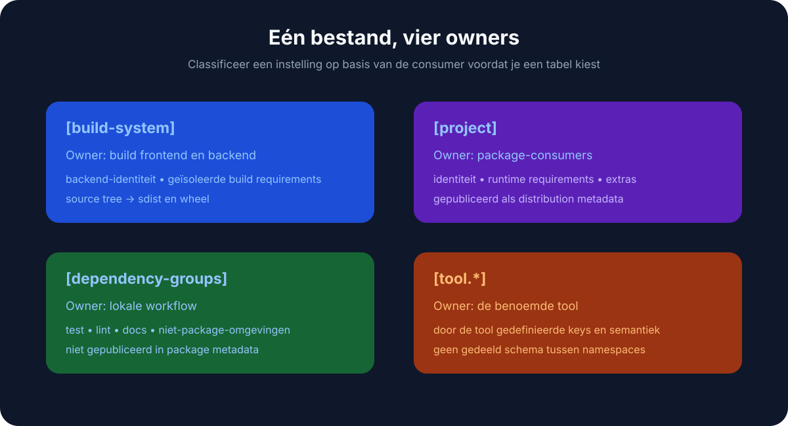
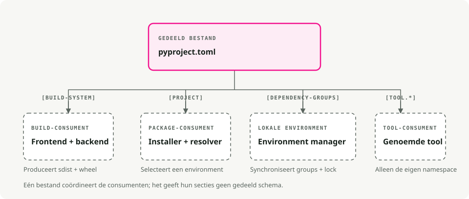
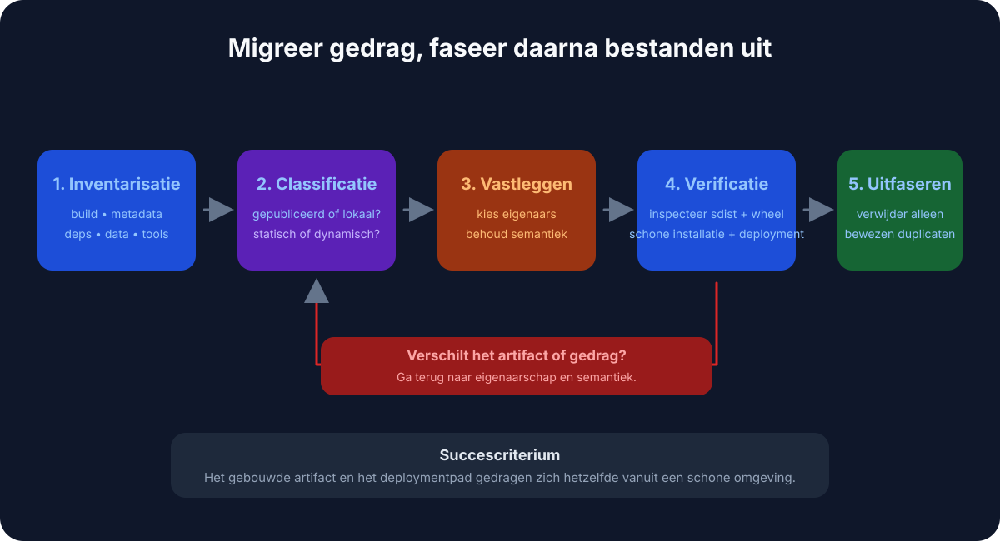

Automatische vertaling
Dit artikel is automatisch vertaald vanuit de oorspronkelijke Engelse versie.
pyproject.toml Gids: Python-pakketten, afhankelijkheden en configuratie van tools
Als je ooit een Python-project hebt geopend en geprobeerd hebt uit te vinden waar de afhankelijkheden, bouwinstellingen en toolconfiguraties zich precies bevinden, ken je het probleem. setup.py, setup.cfg, requirements.txt, MANIFEST.in, plus een handvol dotfiles voor elke linter en formatter — allemaal die gegevens uit verschillende bronnen lezen.
pyproject.toml
pyproject.toml is ongeveer de package.json voor Python. Eén bestand bevat de metadata van je project, afhankelijkheden en instellingen van de tools. Of je nu gebruikmaakt van .venv, pyenv, of uvDoor alles hier onder te brengen, wordt de opset en samenwerking eenvoudiger.
Wat is het pyproject.toml? PEP 518 (2016) introduceerde de [build-system] een tabel zodat bouwtools hun vereisten op een gestandaardiseerde manier kunnen specificeren. PEP 621 (2020) voegde toe de [project] Tabel met metadata van de kernpakketten: naam, versie, afhankelijkheden en dergelijke.
Tegenwoordig leest de meeste Python-hulpprogramma’s (Black, isort, pytest, Ruff, mypy) hun configuratie uit [tool.*] secties in dit bestand.

Waarom dit belangrijk is
Minder bestanden om na te gaan
Een typisch legacy-project moest veel verschillende taken tegelijk afhandelen. setup.py, setup.cfg, requirements.txt, MANIFEST.in, en een groep dotfiles (.flake8, .coveragerc, en dergelijke). De meeste daarvan worden samengevoegd op één locatie.
Build-procedures die onafhankelijk zijn van de backend
Wanneer je het uitvoert pip install ., pip leest pyproject.toml en installeert alle bouwtools die uw project nodig heeft: setuptools, flit, hatchling – kies maar wat u wilt. U zit niet langer vast aan setuptools.
Één plek voor configuratie van tools
Linters, formatters, testrunners en typecheckers weten allemaal hier te kijken. Uw IDE, CI-pijpleiding en collega’s lezen uit hetzelfde bestand.

Anatomie van een pyproject.toml
Een typische bestand bevat drie hoofdsecties:
# 1. Build system - tells pip/build how to package your project
[build-system]
requires = ["hatchling"]
build-backend = "hatchling.build"
# 2. Project metadata and dependencies
[project]
name = "awesome-app"
version = "0.1.0"
description = "Short demo of pyproject.toml"
readme = "README.md"
requires-python = ">=3.12"
dependencies = [
"fastapi>=0.111",
"uvicorn[standard]>=0.30",
]
# Expose CLI commands
[project.scripts]
awesome-cli = "awesome_app.cli:main"
# Optional dependencies (e.g., for development)
[project.optional-dependencies]
dev = ["pytest", "ruff", "mypy"]
# 3. Tool configuration
[tool.ruff]
line-length = 100
target-version = "py312"
[tool.pytest.ini_options]
addopts = "-ra -q"
testpaths = ["tests"]
Uitgebreide analyse [build-system]
Verplicht als u uw project wilt pakken of distribueren. Dit wordt gebruikt om pip en bouwtools (zoals python -m build) Welke backend moet worden gebruikt. [project]
De metadata van uw pakket. Hier bevinden zich de afhankelijkheden in plaats van requirements.txt.
dependencies: De vereisten voor de uitvoering van uw pakket.optional-dependencies: groepen van extra afhankelijkheden (dev,test,docs).scripts: maakt uitvoerbare commando's aan. In het bovenstaande voorbeeld geeft het installeren van het pakket u eenawesome-clicommando dat wordt uitgevoerdmainfunctie inawesome_app/cli.py.
[tool.*]
Configuratie voor elk hulpmiddel dat dit ondersteunt. Elk hulpmiddel krijgt zijn eigen namespace: [tool.pytest.ini_options], [tool.mypy], [tool.ruff], en de rest.
Vervangt het dit? requirements.txt?
Voor moderne workflows, ja. Hulpmiddelen zoals Poëzie, PDM, Hatch, en UV de afhankelijkheden direct opslaan in de [project] sectie aanmaken en lockbestanden genereren voor reproduceerbaarheid.
U wilt dit waarschijnlijk nog steeds requirements.txt if:
- U werkt met een legendarisch deploy-systeem dat dit vereist.
- U beschikt over een CI-script dat nog niet is bijgewerkt.
De meeste moderne tools kunnen er één uit uw bestand exporteren. pyproject.toml indien nodig:
uv export > requirements.txt
Kiezen voor een build-backend
De keuze voor de build-backend is een van de meest verwarrende beslissingen. Hier is een snelle vergelijking:
| Backend | Ideaal voor | Voordelen | Cons |
|---|---|---|---|
| Kuiken | Moderne standaard | Snel, uitbreidbaar en ondersteunt plugins | Nieuwer, met minder ondersteuning voor oudere systemen |
| Flit | Eenvoudige pakketten | Uiterst eenvoudig, geen configuratie nodig | Niet geschikt voor complexe builds (C-extensions). |
| Setuptools | Legendarisch en complex | Steunt alles (C-extensions, enzovoort). | Langzamer, meer configuratie nodig |
| Poëzie | Gebruikers van Poetry | Geïntegreerd met het ecosysteem van Poetry | Vastgezet in de Poetry-workflow |
Voor nieuwe projecten die uitsluitend in Python zijn geschreven, is Hatchling een redelijke standaardkeuze. Het is namelijk wat uv init schrijft het voor u.
Migreren van een bestaand project
Als u een oud Python-project hebt, hier is hoe u dit kunt moderniseren:

- Voeg toe
[build-system]. Als je niet zeker weet welke backend je moet gebruiken, begin dan metrequires = ["setuptools>=61", "wheel"]2. Verplaats de metadata naar[project]. Overbreng de naam, versie en afhankelijkheden vansetup.pyofsetup.cfg3. Converteer de dev-dependenties. Plaats ze in[project.optional-dependencies].dev. - Stel de hulpmiddelen in. Voeg toe
[tool.*]Secties voor Black, pytest, mypy, enzovoort. - Bepaal wat er met... moet gebeuren.
requirements.txt. Of verwijder het, of genereer het uit uw lockfile voor legager systeem die het nodig hebben.
Na de migratie kunt u het meestal verwijderen. setup.py, setup.cfg, en de meeste van die configuratie-dotbestanden.
Enkele nuttige functies
CLI-ingangspunten
In plaats van de oude console_scripts blokkade in setup.py, gebruik [project.scripts]:
[project.scripts]
my-tool = "my_package.main:run"
Wanneer iemand je pakket installeert, kan deze het invoeren. my-tool in hun terminal.
Werkruimtes (monorepos)
Hulpmiddelen zoals uv en hatch Ondersteuning voor werkruimtes, waarmee u meerdere pakketten in één repository kunt beheren:
[tool.uv.workspace]
members = ["packages/*"]
U kunt meerdere onderling afhankelijke pakketten ontwikkelen en ze allemaal in één virtuele omgeving installeren voor testing.
Typische werkwijzen met uv
Een nieuw project starten
uv init my_app # creates folder with pyproject.toml and .venv
cd my_app
uv add requests fastapi # adds to [project.dependencies] and installs
uv run pytest # runs tests in the venv
Scripten uitvoeren
Jij kunt scripts ofwel definiëren in pyproject.toml (Een taakrunner gebruiken zoals poe of hatch) of bel gewoon op uv run:
uv run python main.py
Praktische tips
- Pin geen exacte versies in bibliotheken. Gebruik in plaats daarvan bereiken zoals
requests>=2.30Zodat je bibliotheek geen conflicten heeft met andere componenten die in iemands omgeving geïnstalleerd zijn. - Pin de versies in de applicaties. Gebruik een lockfile.
uv.lock,poetry.lock) voor reproduceerbare builds. - Groeper de ontwikkelingsafhankelijkheden. Houd de afhankelijkheden voor testing, linting en documentatie in aparte, optionele groepen.
dev,test,docs). - Gooi niet elke optie erin.
pyproject.toml. Houd je aan de projectwijde standaarden en laat de configuratiebestanden specifiek voor de tools de rest afhandelen als het te ingewikkeld wordt.
De echte winst zit in pyproject.toml Het gaat voornamelijk om het wegnemen van kleine, dagelijkse obstakels. Je hoeft niet langer te zoeken naar welk bestand verantwoordelijk is voor de bouw. De linter-configuratie bevindt zich naast de afhankelijkheden. Pip en je IDE zijn eindelijk het eens over wat geïnstalleerd is. Kies een bouwbekkend en plaatst je afhankelijkheden erin [project]en laat uw hulpprogramma’s gegevens uit één enkele bron lezen. Als u net begint, uv init brengt je al op een groot deel van de weg met één enkele opdracht.
Belangrijkste punten
pyproject.tomlHet is het centrale configuratiebestand voor moderne Python-projecten.- PEP 518 definieert de vereisten voor het bouwsysteem; PEP 621 definieert de projectmetadata.
- Houd de configuratie van de tools in
pyproject.tomlWanneer het hulpprogramma dit ondersteunt, maar forceer ongerelateerde configuraties niet in één bestand. - Het vergrendelen van bestanden en het opbouwen van metadata lossen verschillende problemen op: reproduceerbare installaties versus pakketidentiteit.
Referenties
- PEP 518 - vereisten voor het bouwsysteem in
pyproject.toml. - PEP 621 - Projectmetadata. Python-pakketgeneratie gebruikersgids: pyproject.toml - Praktische configuratie van het project. UV-projectdocumentatie -
pyproject.tomlmet UV.